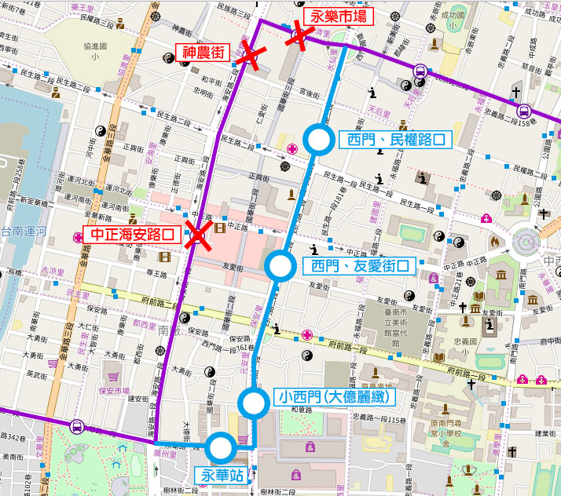

<!DOCTYPE html PUBLIC "-//W3C//DTD XHTML 1.0 Strict//EN" "http://www.w3.org/TR/xhtml1/DTD/xhtml1-strict.dtd">
<html xmlns="http://www.w3.org/1999/xhtml">
<head>
<meta http-equiv="Content-Type" content="text/html; charset=utf-8" />
<script type="text/javascript">
	route_name = '77路電動巴士';
	route_name_en = 'No.77';
	route_file_name = 'city_bus_77';
	route_type = 'city_bus';
	route_interval = ['原住民文化會館','南紡購物中心'];
</script>
<script src="../tools/web_model.js"></script> 
<script type="text/javascript">
	header_code();
</script>
</head>
<body>
<script type="text/javascript">
	block_header();
	block_route_map('即日起至2017/12/08(星期五)，配合中西區海安路區域景觀改造工程交通管制，77路<span style="color: crimson; font-weight: bold;">暫不停靠：中正海安路口、神農街、永樂市場；</span><span style="color: lightblue; font-weight: bold;">臨時停靠：永華站[與10路共站]、小西門(大億麗緻)[與1路共站]、西門、友愛街口[與1路共站]、西門、民權路口[與5路共站]</span><br /><br />改道路線如下圖：<br />');
	block_route_info(route_interval,'四方電巴','尖25離30~45','一段票','http://www.2384.com.tw/ebus/jsp/ajaxBus.jsp?pathId=1077&locale=zh_TW');
	block_fare(1, null);
	block_time_schedule('原住民文化會館','南紡購物中心','');
	block_transfer(transfer_aboriginal_culture_center);
	block_copyright();
</script>
</body>
</html>